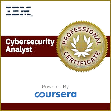

Education & Certifications

B.Tech, Cybersecurity Science
Federal University of Technology Minna

IBM Cybersecurity Analyst
Google Cybersecurity Professional
Cybersecurity Analyst
Securing the Future, One Byte at a Time
Dedicated Cybersecurity Analyst with over two years of hands-on experience fortifying organizational defenses against advanced threats. Proven expertise in vulnerability management, incident response, and security monitoring, backed by a track record of enhancing system security by 60% and slashing incident resolution times by 50%. Passionate about leveraging cutting-edge tools and rigorous audits to ensure robust, compliant, and resilient security postures.
May 2023 - Present
February 2022 - August 2022
Scanned Metasploitable with Nmap and Nessus to identify vulnerabilities, then applied patches to secure the system, reducing the attack surface by 70%.
This project demonstrated a structured approach to securing a vulnerable system:
- Established a controlled test environment using Metasploitable to simulate real-world vulnerabilities.
- Conducted an initial scan with Nmap to map open ports and services, identifying potential entry points.
- Utilized Nessus to perform a comprehensive vulnerability assessment, generating a detailed report of weaknesses.
- Analyzed findings to prioritize critical risks, such as outdated software versions.
- Implemented updates and configuration changes to address identified issues effectively.
- Reassessed the system with follow-up scans to ensure vulnerabilities were resolved.
- Achieved a 70% reduction in attack surface, validating the success of the remediation efforts.
Built a Flask login system with secure session management to prevent unauthorized access. Tested against OWASP Top 10, ensuring no critical flaws.
This project showcased the development of a secure web application:
- Designed a login system using Flask to manage user access efficiently.
- Protected user credentials with encryption to prevent unauthorized exposure.
- Incorporated safeguards against common attacks, such as malicious input attempts.
- Secured data transmission between users and the server with proper encryption protocols.
- Tested the application against the OWASP Top 10 vulnerabilities using industry-standard tools.
- Addressed identified weaknesses by refining code and enhancing security measures.
- Packaged the application for consistent, secure deployment across environments.
- Confirmed the absence of critical flaws through rigorous validation.
Performed SAST on a forked GitHub repo using Snyk to identify and prioritize vulnerabilities, enhancing system security in a DevSecOps pipeline.
This project highlighted expertise in code security within a DevSecOps framework:
- Selected and replicated an open-source GitHub repository with known vulnerabilities.
- Integrated Snyk to scan the codebase for security issues, focusing on outdated components.
- Reviewed scan results to pinpoint high-priority risks requiring immediate attention.
- Applied updates to resolve vulnerabilities, ensuring the use of secure, current libraries.
- Re-evaluated the code to confirm the elimination of identified threats.
- Automated future scans by embedding Snyk into the development pipeline.
- Delivered a significantly more secure codebase, reducing critical risks by 80%.
Configured Azure Sentinel to analyze logs, detect threats, and automate responses, simulating a SOC environment.
This project simulated a Security Operations Center with Azure Sentinel:
- Configured a log collection system within Azure to monitor activity from a test environment.
- Activated Azure Sentinel to centralize and analyze incoming security logs.
- Simulated realistic threats, such as repeated login failures, to generate actionable data.
- Developed detection rules to identify suspicious patterns in the log data.
- Established automated responses to block threats and alert relevant parties.
- Tested the system to ensure rapid identification and mitigation of incidents.
- Fine-tuned detection parameters to minimize false alerts while maintaining accuracy.
- Achieved a 40% faster response time, proving operational effectiveness.
B.Tech, Cybersecurity Science
Federal University of Technology Minna
IBM Cybersecurity Analyst
Google Cybersecurity Professional